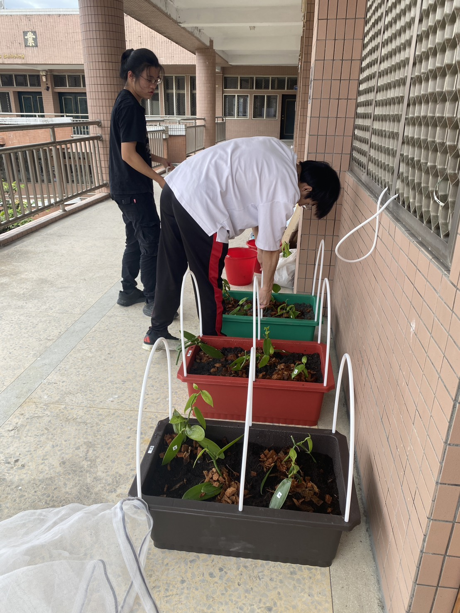
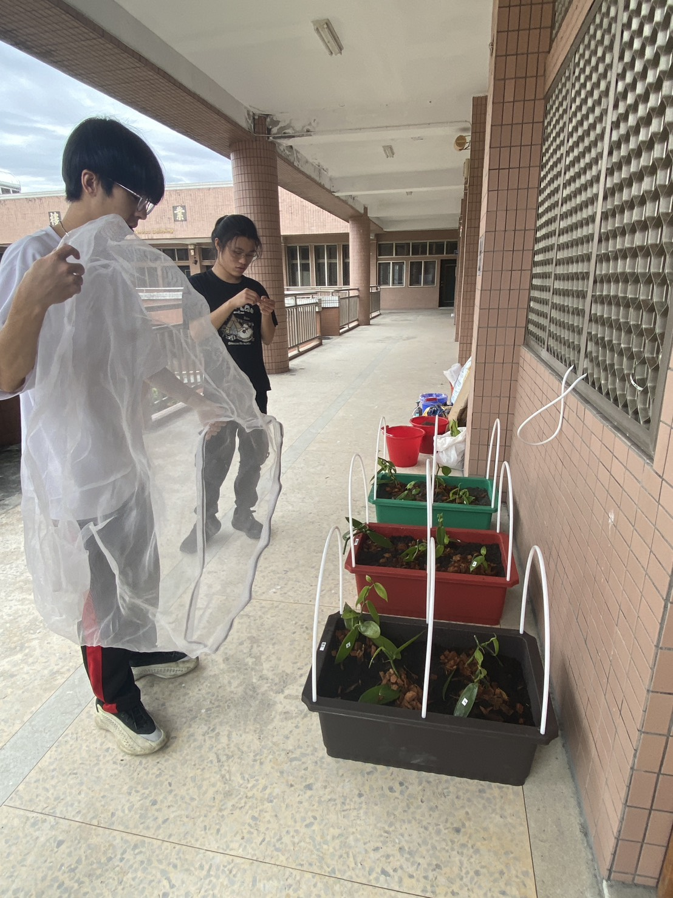

二、實作過程
二、實驗設計
(一)實驗假設
本研究假設，土壤處理方式的不同將對香莢蘭氣生根的生長產生影響。
由於氣生根為香莢蘭吸收水分與養分的重要構造，其生長狀況會直接影響植
株的整體生長與後續復育成效，因此本實驗選定「氣生根長度」作為主要觀
察與評估指標。
實驗期間為期兩週，在控制相同環境條件下，透過比較三種不同土壤組
成之栽培模組，推測土壤組成差異會造成氣生根生長表現上的不同。藉由為
期兩週的觀察與數據蒐集，驗證各土壤處理方式在香莢蘭生長與作物復育管
理上的可行性與差異性。
假設一：不同的土壤處理方式，會對香莢蘭氣生根的生長造成明顯影響。
假設二：堰塞形成的土壤因為質地較硬、通氣性與排水性較差，可能不利於
植物根系吸收水分與養分，因此推測在 100% 堰塞土壤 中栽培的
香莢蘭，其氣生根生長長度會較短。
假設三：優質培養土具有較好的保水性與通氣性，能提供植物較穩定的生長
環境，因此推測在 100% 優質培養土 中栽培的香莢蘭，其氣生根
生長表現會較佳。
假設四：若將堰塞土壤與優質培養土混合使用，可在一定程度上改善堰塞土
壤對植物生長的不利影響，因此推測 50% 堰塞土壤＋50% 優質培
養土 的處理方式，其氣生根生長情形將介於前兩組之間。
(二)實驗材料與設備
1.土壤與植物材料
本實驗共設置三組土壤處理方式，分別為：
A 組：100% 鹼性土壤
B 組：100% 優質培養土
10
C 組：50% 鹼性土壤與 50% 優質培養土混合
實驗植物選用香莢蘭作為研究對象。香莢蘭為具高經濟價值之作物，其
氣生根生長狀況具有重要研究意義。每一實驗組別均配置 4 株香莢蘭植株，
以提高實驗結果之穩定性與代表性。
2.測量工具
為確保實驗過程中環境條件之監測與數據蒐集，本研究使用下列感測
設備：
(1)溫溼度感測器：用以測量植裁之溫度與濕度變化。
(2)土壤濕度感測器：用以即時監測土壤含水狀態。
(3)日照感測器：用以測量光照強度，確保各組別光照條件一致。
3.其他實驗設備
(1)噴灑式灑水器：用於進行定量澆灌，以維持各實驗組別一致之水分
供給條件，避免因澆水差異影響實驗結果。
(三)實驗過程
步驟一：實驗準備與土壤配置
1.首先，依實驗設計準備三種不同土壤處理組別，以確保各組土壤條件
明確且可比較。
A 組：使用 100% 鹼性（堰塞）土壤。
B 組：使用 100% 優質培養土。
C 組：將 50% 鹼性（堰塞）土壤與 50% 優質培養土均勻混合後使用。
圖 3、100% 優質培養土
資料來源：本組自行拍攝
圖 4、100%鹼性(堰塞)土
資料來源：本組自行拍攝
圖 5、50%的鹼性(堰塞)與
50%的優質培養土
資料來源：本組自行拍攝
11
2.各組土壤分別置入相同規格之栽培容器中，並於配置完成後進行標
示，以避免實驗過程中混淆。完成土壤配置後，將香莢蘭植株依組別
分別栽種，作為後續觀察與測量之實驗對象。
圖 6、每組 4 株植物，種植在各自的土
壤模組
資料來源：本組自行拍攝
圖 7、用來作混合土壤前的整理
資料來源：本組自行拍攝
步驟二：定期觀察與測量
於實驗進行期間，研究團隊每日觀察香莢蘭植株之生長狀況，重點記錄
氣生根的生長情形。測量時，以氣生根自土壤表面伸出並向外生長之部分作
為測量範圍，確保各次測量標準一致。
本實驗共進行兩次正式測量，分別於實驗開始前（第 0 天）及實驗結
束後（第 14 天），使用捲尺量測氣生根之長度，並將測量結果詳實記錄於
資料表中。此外，於每次測量時搭配攝影設備拍攝氣生根生長情形，作為輔
助說明與視覺佐證資料，以提升實驗紀錄之完整性與可信度。
12
實驗前(列舉香莢蘭 1，詳細香莢蘭 1 至 12 號如附件)
項目 圖片 尺寸 外觀描述
香莢蘭
1 號
圖 8、實驗前香莢蘭 1 號
(資料來源：本組自行拍攝)
33cm
圖 9、實驗前香莢蘭 1 號
33 公分
(資料來源：本組自行拍攝)
葉子又
大又厚，顏
色深綠，看
起 來 很 健
康。莖比較
粗，節點明
顯。根很多
而且很長，
整株植物生
長 狀 況 最
好。
實驗後(列舉香莢蘭 1，詳細香莢蘭 1 至 12 號如附件)
項目 圖片 尺寸 外觀描述
香莢蘭
1 號
圖 10、實驗後香莢蘭 1 號
(資料來源：本組自行拍攝)
43cm
圖 11、實驗後香莢蘭 1 號
43 公分
(資料來源：本組自行拍攝)
實驗後
氣生根總長
度由 33 公
分增至 43
公分。葉片
大而厚實、
呈深綠色，
莖部粗壯、
節點明顯，
根系數量多
且生長良
好，整體植
株生長狀況
佳。
步驟三：環境控制與感測紀錄
為確保實驗結果能真實反映不同土壤處理方式對香莢蘭氣生根生長之
影響，本實驗於進行期間盡量控制各組植株之環境條件，使其保持一致。所
13
有實驗組別均放置於相同之栽培環境中，確保日照、通風及空氣條件不因位
置差異而影響實驗結果。
實驗過程中，本研究利用感測設備進行環境數據之蒐集與紀錄。透過溫
溼度感測器，即時監測種植環境之溫度與濕度變化；並使用土壤濕度感測器
記錄各組土壤含水狀況，以掌握澆灌後土壤水分的變化情形。此外，透過日
照感測器量測光照強度，確保各組植株於實驗期間接受相近的光照條件。
感測數據定期進行記錄與整理，作為後續分析氣生根生長差異之參考依
據。透過環境控制與感測紀錄的方式，降低外在環境因素對實驗結果的干擾，
使研究結果更具客觀性與可信度。
資料來源：本組自行拍攝
每組4株植物，種植在各自的土壤模組
